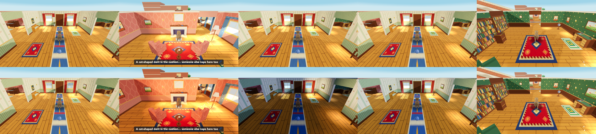

Top row: main. Bottom row: this branch. Same shots, same play camera (page: verify-oldhouse-beauty.html, via scripts/record-page.mjs; the page's params now=H and rain=1 set the clock and a rainy day).

Honest read: the night column is the clear change; the rain streaks and the rug's ripple are readable at full size but small on this sheet; the morning and evening grades are mild at the play camera.